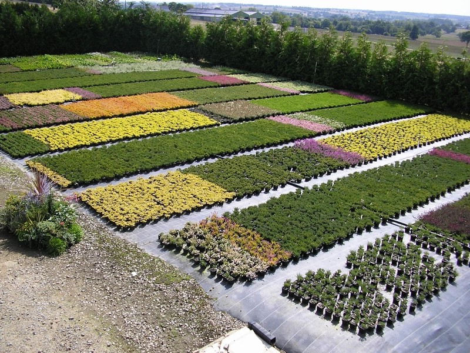

UNITING THE WORLD TO TACKLE CLIMATE CHANGE.
The COP26 summit brought parties together to accelerate action towards the goals of the Paris Agreement and the UN Framework Convention on Climate Change. Learn about how the negotiations at COP26 went and the outcomes achieved in the documents below.
Please contact us per Email for any further questions about The Glascow conference. contact@atr.org
CREATIVE OF UNCC LOGO
UNC Charlotte was relatively unknown outside of the region, and the administration sought to build a distinctive identity with the first official logomark. Joe Sonderman, with Jack Pentes Design, created the block form UNCC logo as a pro bono project.

See the past summit of climat change
Take a look at the last two Editions.

2013 Summit
